Models¶
Bayesian Model¶
-
class
pgmpy.models.BayesianModel.BayesianModel(ebunch=None)[source]¶ Base class for bayesian model.
A models stores nodes and edges with conditional probability distribution (cpd) and other attributes.
models hold directed edges. Self loops are not allowed neither multiple (parallel) edges.
Nodes can be any hashable python object.
Edges are represented as links between nodes.
Parameters: data : input graph
Data to initialize graph. If data=None (default) an empty graph is created. The data can be an edge list, or any NetworkX graph object.
Examples
Create an empty bayesian model with no nodes and no edges.
>>> from pgmpy.models import BayesianModel >>> G = BayesianModel()
G can be grown in several ways.
Nodes:
Add one node at a time:
>>> G.add_node('a')
Add the nodes from any container (a list, set or tuple or the nodes from another graph).
>>> G.add_nodes_from(['a', 'b'])
Edges:
G can also be grown by adding edges.
Add one edge,
>>> G.add_edge('a', 'b')
a list of edges,
>>> G.add_edges_from([('a', 'b'), ('b', 'c')])
If some edges connect nodes not yet in the model, the nodes are added automatically. There are no errors when adding nodes or edges that already exist.
Shortcuts:
Many common graph features allow python syntax for speed reporting.
>>> 'a' in G # check if node in graph True >>> len(G) # number of nodes in graph 3
-
active_trail_nodes(variables, observed=None)[source]¶ Returns a dictionary with the given variables as keys and all the nodes reachable from that respective variable as values.
Parameters: variables: str or array like
variables whose active trails are to be found.
observed : List of nodes (optional)
If given the active trails would be computed assuming these nodes to be observed.
References
Details of the algorithm can be found in ‘Probabilistic Graphical Model Principles and Techniques’ - Koller and Friedman Page 75 Algorithm 3.1
Examples
>>> from pgmpy.models import BayesianModel >>> student = BayesianModel() >>> student.add_nodes_from(['diff', 'intel', 'grades']) >>> student.add_edges_from([('diff', 'grades'), ('intel', 'grades')]) >>> student.active_trail_nodes('diff') {'diff': {'diff', 'grades'}} >>> student.active_trail_nodes(['diff', 'intel'], observed='grades') {'diff': {'diff', 'intel'}, 'intel': {'diff', 'intel'}}
-
add_cpds(*cpds)[source]¶ Add CPD (Conditional Probability Distribution) to the Bayesian Model.
Parameters: cpds : list, set, tuple (array-like)
List of CPDs which will be associated with the model
-
add_edge(u, v, **kwargs)[source]¶ Add an edge between u and v.
The nodes u and v will be automatically added if they are not already in the graph
Parameters: u,v : nodes
Nodes can be any hashable python object.
Examples
>>> from pgmpy.models import BayesianModel/home/abinash/software_packages/numpy-1.7.1 >>> G = BayesianModel() >>> G.add_nodes_from(['grade', 'intel']) >>> G.add_edge('grade', 'intel')
-
check_model()[source]¶ Check the model for various errors. This method checks for the following errors.
- Checks if the sum of the probabilities for each state is equal to 1 (tol=0.01).
- Checks if the CPDs associated with nodes are consistent with their parents.
Returns: check: boolean
True if all the checks are passed
-
copy()[source]¶ Returns a copy of the model.
Returns: BayesianModel: Copy of the model on which the method was called. Examples
>>> from pgmpy.models import BayesianModel >>> from pgmpy.factors.discrete import TabularCPD >>> model = BayesianModel([('A', 'B'), ('B', 'C')]) >>> cpd_a = TabularCPD('A', 2, [[0.2], [0.8]]) >>> cpd_b = TabularCPD('B', 2, [[0.3, 0.7], [0.7, 0.3]], evidence=['A'], evidence_card=[2]) >>> cpd_c = TabularCPD('C', 2, [[0.1, 0.9], [0.9, 0.1]], evidence=['B'], evidence_card=[2]) >>> model.add_cpds(cpd_a, cpd_b, cpd_c) >>> copy_model = model.copy() >>> copy_model.nodes() ['C', 'A', 'B'] >>> copy_model.edges() [('A', 'B'), ('B', 'C')] >>> copy_model.get_cpds() [<TabularCPD representing P(A:2) at 0x7f2824930a58>, <TabularCPD representing P(B:2 | A:2) at 0x7f2824930a90>, <TabularCPD representing P(C:2 | B:2) at 0x7f2824944240>]
-
fit(data, estimator=None, state_names=[], complete_samples_only=True, **kwargs)[source]¶ Estimates the CPD for each variable based on a given data set.
Parameters: data: pandas DataFrame object
DataFrame object with column names identical to the variable names of the network. (If some values in the data are missing the data cells should be set to numpy.NaN. Note that pandas converts each column containing numpy.NaN`s to dtype `float.)
estimator: Estimator class
One of: - MaximumLikelihoodEstimator (default) - BayesianEstimator: In this case, pass ‘prior_type’ and either ‘pseudo_counts’
or ‘equivalent_sample_size’ as additional keyword arguments. See BayesianEstimator.get_parameters() for usage.
state_names: dict (optional)
A dict indicating, for each variable, the discrete set of states that the variable can take. If unspecified, the observed values in the data set are taken to be the only possible states.
complete_samples_only: bool (default `True`)
Specifies how to deal with missing data, if present. If set to True all rows that contain np.Nan somewhere are ignored. If False then, for each variable, every row where neither the variable nor its parents are np.NaN is used.
Examples
>>> import pandas as pd >>> from pgmpy.models import BayesianModel >>> from pgmpy.estimators import MaximumLikelihoodEstimator >>> data = pd.DataFrame(data={'A': [0, 0, 1], 'B': [0, 1, 0], 'C': [1, 1, 0]}) >>> model = BayesianModel([('A', 'C'), ('B', 'C')]) >>> model.fit(data) >>> model.get_cpds() [<TabularCPD representing P(A:2) at 0x7fb98a7d50f0>, <TabularCPD representing P(B:2) at 0x7fb98a7d5588>, <TabularCPD representing P(C:2 | A:2, B:2) at 0x7fb98a7b1f98>]
-
get_cardinality(node=None)[source]¶ Returns the cardinality of the node. Throws an error if the CPD for the queried node hasn’t been added to the network.
Parameters: node: Any hashable python object(optional).
The node whose cardinality we want. If node is not specified returns a dictionary with the given variable as keys and their respective cardinality as values.
Returns: int or dict : If node is specified returns the cardinality of the node.
If node is not specified returns a dictionary with the given variable as keys and their respective cardinality as values.
Examples
>>> from pgmpy.models import BayesianModel >>> from pgmpy.factors.discrete import TabularCPD >>> student = BayesianModel([('diff', 'grade'), ('intel', 'grade')]) >>> cpd_diff = TabularCPD('diff',2,[[0.6,0.4]]); >>> cpd_intel = TabularCPD('intel',2,[[0.7,0.3]]); >>> cpd_grade = TabularCPD('grade', 2, [[0.1, 0.9, 0.2, 0.7], ... [0.9, 0.1, 0.8, 0.3]], ... ['intel', 'diff'], [2, 2]) >>> student.add_cpds(cpd_diff,cpd_intel,cpd_grade) >>> student.get_cardinality() defaultdict(int, {'diff': 2, 'grade': 2, 'intel': 2})
>>> student.get_cardinality('intel') 2
-
get_cpds(node=None)[source]¶ Returns the cpd of the node. If node is not specified returns all the CPDs that have been added till now to the graph
Returns: A list of TabularCPDs. Examples
>>> from pgmpy.models import BayesianModel >>> from pgmpy.factors.discrete import TabularCPD >>> student = BayesianModel([('diff', 'grade'), ('intel', 'grade')]) >>> cpd = TabularCPD('grade', 2, [[0.1, 0.9, 0.2, 0.7], ... [0.9, 0.1, 0.8, 0.3]], ... ['intel', 'diff'], [2, 2]) >>> student.add_cpds(cpd) >>> student.get_cpds()
-
get_immoralities()[source]¶ Finds all the immoralities in the model A v-structure X -> Z <- Y is an immorality if there is no direct edge between X and Y .
Returns: set: A set of all the immoralities in the model Examples
>>> from pgmpy.models import BayesianModel >>> student = BayesianModel() >>> student.add_edges_from([('diff', 'grade'), ('intel', 'grade'), ... ('intel', 'SAT'), ('grade', 'letter')]) >>> student.get_immoralities() {('diff','intel')}
-
get_independencies(latex=False)[source]¶ Computes independencies in the Bayesian Network, by checking d-seperation.
Parameters: latex: boolean
If latex=True then latex string of the independence assertion would be created.
Examples
>>> from pgmpy.models import BayesianModel >>> chain = BayesianModel([('X', 'Y'), ('Y', 'Z')]) >>> chain.get_independencies() (X _|_ Z | Y) (Z _|_ X | Y)
-
is_active_trail(start, end, observed=None)[source]¶ Returns True if there is any active trail between start and end node
Parameters: start : Graph Node
end : Graph Node
observed : List of nodes (optional)
If given the active trail would be computed assuming these nodes to be observed.
additional_observed : List of nodes (optional)
If given the active trail would be computed assuming these nodes to be observed along with the nodes marked as observed in the model.
Examples
>>> from pgmpy.models import BayesianModel >>> student = BayesianModel() >>> student.add_nodes_from(['diff', 'intel', 'grades', 'letter', 'sat']) >>> student.add_edges_from([('diff', 'grades'), ('intel', 'grades'), ('grades', 'letter'), ... ('intel', 'sat')]) >>> student.is_active_trail('diff', 'intel') False >>> student.is_active_trail('grades', 'sat') True
-
is_iequivalent(model)[source]¶ Checks whether the given model is I-equivalent
Two graphs G1 and G2 are said to be I-equivalent if they have same skeleton and have same set of immoralities.
Note: For same skeleton different names of nodes can work but for immoralities names of nodes must be same
Parameters: model : A Bayesian model object, for which you want to check I-equivalence Returns: boolean : True if both are I-equivalent, False otherwise Examples
>>> from pgmpy.models import BayesianModel >>> G = BayesianModel() >>> G.add_edges_from([('V', 'W'), ('W', 'X'), ... ('X', 'Y'), ('Z', 'Y')]) >>> G1 = BayesianModel() >>> G1.add_edges_from([('W', 'V'), ('X', 'W'), ... ('X', 'Y'), ('Z', 'Y')]) >>> G.is_iequivalent(G1) True
-
is_imap(JPD)[source]¶ Checks whether the bayesian model is Imap of given JointProbabilityDistribution
Parameters: JPD : An instance of JointProbabilityDistribution Class, for which you want to
check the Imap
Returns: boolean : True if bayesian model is Imap for given Joint Probability Distribution
False otherwise
Examples
>>> from pgmpy.models import BayesianModel
>>> from pgmpy.factors.discrete import TabularCPD
>>> from pgmpy.factors.discrete import JointProbabilityDistribution
>>> G = BayesianModel([('diff', 'grade'), ('intel', 'grade')])
>>> diff_cpd = TabularCPD('diff', 2, [[0.2], [0.8]])
>>> intel_cpd = TabularCPD('intel', 3, [[0.5], [0.3], [0.2]])
>>> grade_cpd = TabularCPD('grade', 3,
... [[0.1,0.1,0.1,0.1,0.1,0.1],
... [0.1,0.1,0.1,0.1,0.1,0.1],
... [0.8,0.8,0.8,0.8,0.8,0.8]],
... evidence=[‘diff’, ‘intel’],
... evidence_card=[2, 3])
>>> G.add_cpds(diff_cpd, intel_cpd, grade_cpd)
>>> val = [0.01, 0.01, 0.08, 0.006, 0.006, 0.048, 0.004, 0.004, 0.032,
0.04, 0.04, 0.32, 0.024, 0.024, 0.192, 0.016, 0.016, 0.128]
>>> JPD = JointProbabilityDistribution(['diff', 'intel', 'grade'], [2, 3, 3], val)
>>> G.is_imap(JPD)
True
-
local_independencies(variables)[source]¶ Returns an instance of Independencies containing the local independencies of each of the variables.
Parameters: variables: str or array like
variables whose local independencies are to be found.
Examples
>>> from pgmpy.models import BayesianModel >>> student = BayesianModel() >>> student.add_edges_from([('diff', 'grade'), ('intel', 'grade'), >>> ('grade', 'letter'), ('intel', 'SAT')]) >>> ind = student.local_independencies('grade') >>> ind (grade _|_ SAT | diff, intel)
-
predict(data)[source]¶ Predicts states of all the missing variables.
Parameters: data : pandas DataFrame object
A DataFrame object with column names same as the variables in the model.
Examples
>>> import numpy as np >>> import pandas as pd >>> from pgmpy.models import BayesianModel >>> values = pd.DataFrame(np.random.randint(low=0, high=2, size=(1000, 5)), ... columns=['A', 'B', 'C', 'D', 'E']) >>> train_data = values[:800] >>> predict_data = values[800:] >>> model = BayesianModel([('A', 'B'), ('C', 'B'), ('C', 'D'), ('B', 'E')]) >>> model.fit(values) >>> predict_data = predict_data.copy() >>> predict_data.drop('E', axis=1, inplace=True) >>> y_pred = model.predict(predict_data) >>> y_pred E 800 0 801 1 802 1 803 1 804 0 ... ... 993 0 994 0 995 1 996 1 997 0 998 0 999 0
-
predict_probability(data)[source]¶ Predicts probabilities of all states of the missing variables.
Parameters: data : pandas DataFrame object
A DataFrame object with column names same as the variables in the model.
Examples
>>> import numpy as np >>> import pandas as pd >>> from pgmpy.models import BayesianModel >>> values = pd.DataFrame(np.random.randint(low=0, high=2, size=(100, 5)), ... columns=['A', 'B', 'C', 'D', 'E']) >>> train_data = values[:80] >>> predict_data = values[80:] >>> model = BayesianModel([('A', 'B'), ('C', 'B'), ('C', 'D'), ('B', 'E')]) >>> model.fit(values) >>> predict_data = predict_data.copy() >>> predict_data.drop('B', axis=1, inplace=True) >>> y_prob = model.predict_probability(predict_data) >>> y_prob B_0 B_1 80 0.439178 0.560822 81 0.581970 0.418030 82 0.488275 0.511725 83 0.581970 0.418030 84 0.510794 0.489206 85 0.439178 0.560822 86 0.439178 0.560822 87 0.417124 0.582876 88 0.407978 0.592022 89 0.429905 0.570095 90 0.581970 0.418030 91 0.407978 0.592022 92 0.429905 0.570095 93 0.429905 0.570095 94 0.439178 0.560822 95 0.407978 0.592022 96 0.559904 0.440096 97 0.417124 0.582876 98 0.488275 0.511725 99 0.407978 0.592022
-
remove_cpds(*cpds)[source]¶ Removes the cpds that are provided in the argument.
Parameters: *cpds: TabularCPD object
A CPD object on any subset of the variables of the model which is to be associated with the model.
Examples
>>> from pgmpy.models import BayesianModel >>> from pgmpy.factors.discrete import TabularCPD >>> student = BayesianModel([('diff', 'grade'), ('intel', 'grade')]) >>> cpd = TabularCPD('grade', 2, [[0.1, 0.9, 0.2, 0.7], ... [0.9, 0.1, 0.8, 0.3]], ... ['intel', 'diff'], [2, 2]) >>> student.add_cpds(cpd) >>> student.remove_cpds(cpd)
-
remove_node(node)[source]¶ Remove node from the model.
Removing a node also removes all the associated edges, removes the CPD of the node and marginalizes the CPDs of it’s children.
Parameters: node : node
Node which is to be removed from the model.
Returns: None
Examples
>>> import pandas as pd >>> import numpy as np >>> from pgmpy.models import BayesianModel >>> model = BayesianModel([('A', 'B'), ('B', 'C'), ... ('A', 'D'), ('D', 'C')]) >>> values = pd.DataFrame(np.random.randint(low=0, high=2, size=(1000, 4)), ... columns=['A', 'B', 'C', 'D']) >>> model.fit(values) >>> model.get_cpds() [<TabularCPD representing P(A:2) at 0x7f28248e2438>, <TabularCPD representing P(B:2 | A:2) at 0x7f28248e23c8>, <TabularCPD representing P(C:2 | B:2, D:2) at 0x7f28248e2748>, <TabularCPD representing P(D:2 | A:2) at 0x7f28248e26a0>] >>> model.remove_node('A') >>> model.get_cpds() [<TabularCPD representing P(B:2) at 0x7f28248e23c8>, <TabularCPD representing P(C:2 | B:2, D:2) at 0x7f28248e2748>, <TabularCPD representing P(D:2) at 0x7f28248e26a0>]
-
remove_nodes_from(nodes)[source]¶ Remove multiple nodes from the model.
Removing a node also removes all the associated edges, removes the CPD of the node and marginalizes the CPDs of it’s children.
Parameters: nodes : list, set (iterable)
Nodes which are to be removed from the model.
Returns: None
Examples
>>> import pandas as pd >>> import numpy as np >>> from pgmpy.models import BayesianModel >>> model = BayesianModel([('A', 'B'), ('B', 'C'), ... ('A', 'D'), ('D', 'C')]) >>> values = pd.DataFrame(np.random.randint(low=0, high=2, size=(1000, 4)), ... columns=['A', 'B', 'C', 'D']) >>> model.fit(values) >>> model.get_cpds() [<TabularCPD representing P(A:2) at 0x7f28248e2438>, <TabularCPD representing P(B:2 | A:2) at 0x7f28248e23c8>, <TabularCPD representing P(C:2 | B:2, D:2) at 0x7f28248e2748>, <TabularCPD representing P(D:2 | A:2) at 0x7f28248e26a0>] >>> model.remove_nodes_from(['A', 'B']) >>> model.get_cpds() [<TabularCPD representing P(C:2 | D:2) at 0x7f28248e2a58>, <TabularCPD representing P(D:2) at 0x7f28248e26d8>]
-
to_junction_tree()[source]¶ Creates a junction tree (or clique tree) for a given bayesian model.
For converting a Bayesian Model into a Clique tree, first it is converted into a Markov one.
For a given markov model (H) a junction tree (G) is a graph 1. where each node in G corresponds to a maximal clique in H 2. each sepset in G separates the variables strictly on one side of the edge to other.
Examples
>>> from pgmpy.models import BayesianModel >>> from pgmpy.factors.discrete import TabularCPD >>> G = BayesianModel([('diff', 'grade'), ('intel', 'grade'), ... ('intel', 'SAT'), ('grade', 'letter')]) >>> diff_cpd = TabularCPD('diff', 2, [[0.2], [0.8]]) >>> intel_cpd = TabularCPD('intel', 3, [[0.5], [0.3], [0.2]]) >>> grade_cpd = TabularCPD('grade', 3, ... [[0.1,0.1,0.1,0.1,0.1,0.1], ... [0.1,0.1,0.1,0.1,0.1,0.1], ... [0.8,0.8,0.8,0.8,0.8,0.8]], ... evidence=['diff', 'intel'], ... evidence_card=[2, 3]) >>> sat_cpd = TabularCPD('SAT', 2, ... [[0.1, 0.2, 0.7], ... [0.9, 0.8, 0.3]], ... evidence=['intel'], evidence_card=[3]) >>> letter_cpd = TabularCPD('letter', 2, ... [[0.1, 0.4, 0.8], ... [0.9, 0.6, 0.2]], ... evidence=['grade'], evidence_card=[3]) >>> G.add_cpds(diff_cpd, intel_cpd, grade_cpd, sat_cpd, letter_cpd) >>> jt = G.to_junction_tree()
-
to_markov_model()[source]¶ Converts bayesian model to markov model. The markov model created would be the moral graph of the bayesian model.
Examples
>>> from pgmpy.models import BayesianModel >>> G = BayesianModel([('diff', 'grade'), ('intel', 'grade'), ... ('intel', 'SAT'), ('grade', 'letter')]) >>> mm = G.to_markov_model() >>> mm.nodes() ['diff', 'grade', 'intel', 'SAT', 'letter'] >>> mm.edges() [('diff', 'intel'), ('diff', 'grade'), ('intel', 'grade'), ('intel', 'SAT'), ('grade', 'letter')]
-
Markov Model¶
-
class
pgmpy.models.MarkovModel.MarkovModel(ebunch=None)[source]¶ Base class for markov model.
A MarkovModel stores nodes and edges with potentials
MarkovModel holds undirected edges.
Parameters: data : input graph
Data to initialize graph. If data=None (default) an empty graph is created. The data can be an edge list, or any NetworkX graph object.
Examples
Create an empty Markov Model with no nodes and no edges.
>>> from pgmpy.models import MarkovModel >>> G = MarkovModel()
G can be grown in several ways.
Nodes:
Add one node at a time:
>>> G.add_node('a')
Add the nodes from any container (a list, set or tuple or the nodes from another graph).
>>> G.add_nodes_from(['a', 'b'])
Edges:
G can also be grown by adding edges.
Add one edge,
>>> G.add_edge('a', 'b')
a list of edges,
>>> G.add_edges_from([('a', 'b'), ('b', 'c')])
If some edges connect nodes not yet in the model, the nodes are added automatically. There are no errors when adding nodes or edges that already exist.
Shortcuts:
Many common graph features allow python syntax for speed reporting.
>>> 'a' in G # check if node in graph True >>> len(G) # number of nodes in graph 3
-
add_edge(u, v, **kwargs)[source]¶ Add an edge between u and v.
The nodes u and v will be automatically added if they are not already in the graph
Parameters: u,v : nodes
Nodes can be any hashable Python object.
Examples
>>> from pgmpy.models import MarkovModel >>> G = MarkovModel() >>> G.add_nodes_from(['Alice', 'Bob', 'Charles']) >>> G.add_edge('Alice', 'Bob')
-
add_factors(*factors)[source]¶ Associate a factor to the graph. See factors class for the order of potential values
Parameters: *factor: pgmpy.factors.factors object
A factor object on any subset of the variables of the model which is to be associated with the model.
Returns: None
Examples
>>> from pgmpy.models import MarkovModel >>> from pgmpy.factors.discrete import DiscreteFactor >>> student = MarkovModel([('Alice', 'Bob'), ('Bob', 'Charles'), ... ('Charles', 'Debbie'), ('Debbie', 'Alice')]) >>> factor = DiscreteFactor(['Alice', 'Bob'], cardinality=[3, 2], ... values=np.random.rand(6)) >>> student.add_factors(factor)
-
check_model()[source]¶ Check the model for various errors. This method checks for the following errors -
- Checks if the cardinalities of all the variables are consistent across all the factors.
- Factors are defined for all the random variables.
Returns: check: boolean
True if all the checks are passed
-
copy()[source]¶ Returns a copy of this Markov Model.
Returns: MarkovModel: Copy of this Markov model.
Examples
>>> from pgmpy.factors.discrete import DiscreteFactor
>>> from pgmpy.models import MarkovModel
>>> G = MarkovModel()
>>> G.add_nodes_from([('a', 'b'), ('b', 'c')])
>>> G.add_edge(('a', 'b'), ('b', 'c'))
>>> G_copy = G.copy()
>>> G_copy.edges()
[((‘a’, ‘b’), (‘b’, ‘c’))]
>>> G_copy.nodes()
[(‘a’, ‘b’), (‘b’, ‘c’)]
>>> factor = DiscreteFactor([('a', 'b')], cardinality=[3],
... values=np.random.rand(3))
>>> G.add_factors(factor)
>>> G.get_factors()
[<DiscreteFactor representing phi((‘a’, ‘b’):3) at 0x...>]
>>> G_copy.get_factors()
[]
-
get_cardinality(node=None)[source]¶ Returns the cardinality of the node. If node is not specified returns a dictionary with the given variable as keys and their respective cardinality as values.
Parameters: node: any hashable python object (optional)
The node whose cardinality we want. If node is not specified returns a dictionary with the given variable as keys and their respective cardinality as values.
Examples
>>> from pgmpy.models import MarkovModel >>> from pgmpy.factors.discrete import DiscreteFactor >>> student = MarkovModel([('Alice', 'Bob'), ('Bob', 'Charles')]) >>> factor = DiscreteFactor(['Alice', 'Bob'], cardinality=[2, 2], ... values=np.random.rand(4)) >>> student.add_factors(factor) >>> student.get_cardinality(node='Alice') 2 >>> student.get_cardinality() defaultdict(<class 'int'>, {'Bob': 2, 'Alice': 2})
-
get_factors(node=None)[source]¶ Returns all the factors containing the node. If node is not specified returns all the factors that have been added till now to the graph.
Examples
>>> from pgmpy.models import MarkovModel >>> from pgmpy.factors.discrete import DiscreteFactor >>> student = MarkovModel([('Alice', 'Bob'), ('Bob', 'Charles')]) >>> factor1 = DiscreteFactor(['Alice', 'Bob'], cardinality=[2, 2], ... values=np.random.rand(4)) >>> factor2 = DiscreteFactor(['Bob', 'Charles'], cardinality=[2, 3], ... values=np.ones(6)) >>> student.add_factors(factor1,factor2) >>> student.get_factors() [<DiscreteFactor representing phi(Alice:2, Bob:2) at 0x7f8a0e9bf630>, <DiscreteFactor representing phi(Bob:2, Charles:3) at 0x7f8a0e9bf5f8>] >>> student.get_factors('Alice') [<DiscreteFactor representing phi(Alice:2, Bob:2) at 0x7f8a0e9bf630>]
-
get_local_independencies(latex=False)[source]¶ Returns all the local independencies present in the markov model.
Local independencies are the independence assertion in the form of .. math:: {X perp W - {X} - MB(X) | MB(X)} where MB is the markov blanket of all the random variables in X
Parameters: latex: boolean
If latex=True then latex string of the indepedence assertion would be created
Examples
>>> from pgmpy.models import MarkovModel >>> mm = MarkovModel() >>> mm.add_nodes_from(['x1', 'x2', 'x3', 'x4', 'x5', 'x6', 'x7']) >>> mm.add_edges_from([('x1', 'x3'), ('x1', 'x4'), ('x2', 'x4'), ... ('x2', 'x5'), ('x3', 'x6'), ('x4', 'x6'), ... ('x4', 'x7'), ('x5', 'x7')]) >>> mm.get_local_independecies()
-
get_partition_function()[source]¶ Returns the partition function for a given undirected graph.
A partition function is defined as
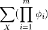
where m is the number of factors present in the graph and X are all the random variables present.
Examples
>>> from pgmpy.models import MarkovModel >>> from pgmpy.factors.discrete import DiscreteFactor >>> G = MarkovModel() >>> G.add_nodes_from(['x1', 'x2', 'x3', 'x4', 'x5', 'x6', 'x7']) >>> G.add_edges_from([('x1', 'x3'), ('x1', 'x4'), ('x2', 'x4'), ... ('x2', 'x5'), ('x3', 'x6'), ('x4', 'x6'), ... ('x4', 'x7'), ('x5', 'x7')]) >>> phi = [DiscreteFactor(edge, [2, 2], np.random.rand(4)) for edge in G.edges()] >>> G.add_factors(*phi) >>> G.get_partition_function()
-
markov_blanket(node)[source]¶ Returns a markov blanket for a random variable.
Markov blanket is the neighboring nodes of the given node.
Examples
>>> from pgmpy.models import MarkovModel >>> mm = MarkovModel() >>> mm.add_nodes_from(['x1', 'x2', 'x3', 'x4', 'x5', 'x6', 'x7']) >>> mm.add_edges_from([('x1', 'x3'), ('x1', 'x4'), ('x2', 'x4'), ... ('x2', 'x5'), ('x3', 'x6'), ('x4', 'x6'), ... ('x4', 'x7'), ('x5', 'x7')]) >>> mm.markov_blanket('x1')
-
remove_factors(*factors)[source]¶ Removes the given factors from the added factors.
Examples
>>> from pgmpy.models import MarkovModel >>> from pgmpy.factors.discrete import DiscreteFactor >>> student = MarkovModel([('Alice', 'Bob'), ('Bob', 'Charles')]) >>> factor = DiscreteFactor(['Alice', 'Bob'], cardinality=[2, 2], ... values=np.random.rand(4)) >>> student.add_factors(factor) >>> student.remove_factors(factor)
-
to_bayesian_model()[source]¶ Creates a Bayesian Model which is a minimum I-Map for this markov model.
The ordering of parents may not remain constant. It would depend on the ordering of variable in the junction tree (which is not constant) all the time.
Examples
>>> from pgmpy.models import MarkovModel >>> from pgmpy.factors.discrete import DiscreteFactor >>> mm = MarkovModel() >>> mm.add_nodes_from(['x1', 'x2', 'x3', 'x4', 'x5', 'x6', 'x7']) >>> mm.add_edges_from([('x1', 'x3'), ('x1', 'x4'), ('x2', 'x4'), ... ('x2', 'x5'), ('x3', 'x6'), ('x4', 'x6'), ... ('x4', 'x7'), ('x5', 'x7')]) >>> phi = [DiscreteFactor(edge, [2, 2], np.random.rand(4)) for edge in mm.edges()] >>> mm.add_factors(*phi) >>> bm = mm.to_bayesian_model()
-
to_factor_graph()[source]¶ Converts the markov model into factor graph.
A factor graph contains two types of nodes. One type corresponds to random variables whereas the second type corresponds to factors over these variables. The graph only contains edges between variables and factor nodes. Each factor node is associated with one factor whose scope is the set of variables that are its neighbors.
Examples
>>> from pgmpy.models import MarkovModel >>> from pgmpy.factors.discrete import DiscreteFactor >>> student = MarkovModel([('Alice', 'Bob'), ('Bob', 'Charles')]) >>> factor1 = DiscreteFactor(['Alice', 'Bob'], [3, 2], np.random.rand(6)) >>> factor2 = DiscreteFactor(['Bob', 'Charles'], [2, 2], np.random.rand(4)) >>> student.add_factors(factor1, factor2) >>> factor_graph = student.to_factor_graph()
-
to_junction_tree()[source]¶ Creates a junction tree (or clique tree) for a given markov model.
For a given markov model (H) a junction tree (G) is a graph 1. where each node in G corresponds to a maximal clique in H 2. each sepset in G separates the variables strictly on one side of the edge to other.
Examples
>>> from pgmpy.models import MarkovModel >>> from pgmpy.factors.discrete import DiscreteFactor >>> mm = MarkovModel() >>> mm.add_nodes_from(['x1', 'x2', 'x3', 'x4', 'x5', 'x6', 'x7']) >>> mm.add_edges_from([('x1', 'x3'), ('x1', 'x4'), ('x2', 'x4'), ... ('x2', 'x5'), ('x3', 'x6'), ('x4', 'x6'), ... ('x4', 'x7'), ('x5', 'x7')]) >>> phi = [DiscreteFactor(edge, [2, 2], np.random.rand(4)) for edge in mm.edges()] >>> mm.add_factors(*phi) >>> junction_tree = mm.to_junction_tree()
-
triangulate(heuristic='H6', order=None, inplace=False)[source]¶ Triangulate the graph.
If order of deletion is given heuristic algorithm will not be used.
Parameters: heuristic: H1 | H2 | H3 | H4 | H5 | H6
The heuristic algorithm to use to decide the deletion order of the variables to compute the triangulated graph. Let X be the set of variables and X(i) denotes the i-th variable.
- S(i) - The size of the clique created by deleting the variable.
- E(i) - Cardinality of variable X(i).
- M(i) - Maximum size of cliques given by X(i) and its adjacent nodes.
- C(i) - Sum of size of cliques given by X(i) and its adjacent nodes.
The heuristic algorithm decide the deletion order if this way:
- H1 - Delete the variable with minimal S(i).
- H2 - Delete the variable with minimal S(i)/E(i).
- H3 - Delete the variable with minimal S(i) - M(i).
- H4 - Delete the variable with minimal S(i) - C(i).
- H5 - Delete the variable with minimal S(i)/M(i).
- H6 - Delete the variable with minimal S(i)/C(i).
order: list, tuple (array-like)
The order of deletion of the variables to compute the triagulated graph. If order is given heuristic algorithm will not be used.
inplace: True | False
if inplace is true then adds the edges to the object from which it is called else returns a new object.
Examples
>>> from pgmpy.models import MarkovModel >>> from pgmpy.factors.discrete import DiscreteFactor >>> G = MarkovModel() >>> G.add_nodes_from(['x1', 'x2', 'x3', 'x4', 'x5', 'x6', 'x7']) >>> G.add_edges_from([('x1', 'x3'), ('x1', 'x4'), ('x2', 'x4'), ... ('x2', 'x5'), ('x3', 'x6'), ('x4', 'x6'), ... ('x4', 'x7'), ('x5', 'x7')]) >>> phi = [DiscreteFactor(edge, [2, 2], np.random.rand(4)) for edge in G.edges()] >>> G.add_factors(*phi) >>> G_chordal = G.triangulate()
-
Dynamic Bayesian Network¶
Factor Graph¶
-
class
pgmpy.models.FactorGraph.FactorGraph(ebunch=None)[source]¶ Class for representing factor graph.
DiscreteFactor graph is a bipartite graph representing factorization of a function. They allow efficient computation of marginal distributions through sum-product algorithm.
A factor graph contains two types of nodes. One type corresponds to random variables whereas the second type corresponds to factors over these variables. The graph only contains edges between variables and factor nodes. Each factor node is associated with one factor whose scope is the set of variables that are its neighbors.
Parameters: data: input graph
Data to initialize graph. If data=None (default) an empty graph is created. The data is an edge list.
Examples
Create an empty FactorGraph with no nodes and no edges
>>> from pgmpy.models import FactorGraph >>> G = FactorGraph()
G can be grown by adding variable nodes as well as factor nodes
Nodes:
Add a node at a time or a list of nodes.
>>> G.add_node('a') >>> G.add_nodes_from(['a', 'b']) >>> phi1 = DiscreteFactor(['a', 'b'], [2, 2], np.random.rand(4)) >>> G.add_factors(phi1) >>> G.add_nodes_from([phi1])
Edges:
G can also be grown by adding edges.
>>> G.add_edge('a', phi1)
or a list of edges
>>> G.add_edges_from([('a', phi1), ('b', phi1)])
-
add_edge(u, v, **kwargs)[source]¶ Add an edge between variable_node and factor_node.
Parameters: u, v: nodes
Nodes can be any hashable Python object.
Examples
>>> from pgmpy.models import FactorGraph >>> G = FactorGraph() >>> G.add_nodes_from(['a', 'b', 'c']) >>> phi1 = DiscreteFactor(['a', 'b'], [2, 2], np.random.rand(4)) >>> G.add_nodes_from([phi1, phi2]) >>> G.add_edge('a', phi1)
-
add_factors(*factors)[source]¶ Associate a factor to the graph. See factors class for the order of potential values.
Parameters: *factor: pgmpy.factors.DiscreteFactor object
A factor object on any subset of the variables of the model which is to be associated with the model.
Examples
>>> from pgmpy.models import FactorGraph >>> from pgmpy.factors.discrete import DiscreteFactor >>> G = FactorGraph() >>> G.add_nodes_from(['a', 'b', 'c']) >>> phi1 = DiscreteFactor(['a', 'b'], [2, 2], np.random.rand(4)) >>> phi2 = DiscreteFactor(['b', 'c'], [2, 2], np.random.rand(4)) >>> G.add_factors(phi1, phi2) >>> G.add_edges_from([('a', phi1), ('b', phi1), ... ('b', phi2), ('c', phi2)])
-
check_model()[source]¶ Check the model for various errors. This method checks for the following errors. In the same time it also updates the cardinalities of all the random variables.
- Check whether bipartite property of factor graph is still maintained or not.
- Check whether factors are associated for all the random variables or not.
- Check if factors are defined for each factor node or not.
- Check if cardinality information for all the variables is availble or not.
- Check if cardinality of random variable remains same across all the factors.
-
copy()[source]¶ Returns a copy of the model.
Returns: FactorGraph : Copy of FactorGraph Examples
>>> import numpy as np >>> from pgmpy.models import FactorGraph >>> from pgmpy.factors.discrete import DiscreteFactor >>> G = FactorGraph() >>> G.add_nodes_from([('a', 'b'), ('b', 'c')]) >>> phi1 = DiscreteFactor(['a', 'b'], [2, 2], np.random.rand(4)) >>> phi2 = DiscreteFactor(['b', 'c'], [2, 2], np.random.rand(4)) >>> G.add_factors(phi1, phi2) >>> G.add_nodes_from([phi1, phi2]) >>> G.add_edges_from([('a', phi1), ('b', phi1), ... ('b', phi2), ('c', phi2)]) >>> G_copy = G.copy() >>> G_copy.nodes() [<Factor representing phi(b:2, c:2) at 0xb4badd4c>, 'b', 'c', 'a', <Factor representing phi(a:2, b:2) at 0xb4badf2c>]
-
get_cardinality(node=None)[source]¶ Returns the cardinality of the node
Parameters: node: any hashable python object (optional)
The node whose cardinality we want. If node is not specified returns a dictionary with the given variable as keys and their respective cardinality as values.
Returns: int or dict : If node is specified returns the cardinality of the node.
If node is not specified returns a dictionary with the given variable as keys and their respective cardinality as values.
Examples
>>> from pgmpy.models import FactorGraph >>> from pgmpy.factors import DiscreteFactor >>> G = FactorGraph() >>> G.add_nodes_from(['a', 'b', 'c']) >>> phi1 = DiscreteFactor(['a', 'b'], [2, 2], np.random.rand(4)) >>> phi2 = DiscreteFactor(['b', 'c'], [2, 2], np.random.rand(4)) >>> G.add_nodes_from([phi1, phi2]) >>> G.add_edges_from([('a', phi1), ('b', phi1), ... ('b', phi2), ('c', phi2)]) >>> G.add_factors(phi1, phi2) >>> G.get_cardinality() defaultdict(<class 'int'>, {'c': 2, 'b': 2, 'a': 2})
>>> G.get_cardinality('a') 2
-
get_factor_nodes()[source]¶ Returns factors nodes present in the graph.
Before calling this method make sure that all the factors are added properly.
Examples
>>> from pgmpy.models import FactorGraph >>> from pgmpy.factors.discrete import DiscreteFactor >>> G = FactorGraph() >>> G.add_nodes_from(['a', 'b', 'c']) >>> phi1 = DiscreteFactor(['a', 'b'], [2, 2], np.random.rand(4)) >>> phi2 = DiscreteFactor(['b', 'c'], [2, 2], np.random.rand(4)) >>> G.add_nodes_from([phi1, phi2]) >>> G.add_factors(phi1, phi2) >>> G.add_edges_from([('a', phi1), ('b', phi1), ... ('b', phi2), ('c', phi2)]) >>> G.get_factor_nodes() [<DiscreteFactor representing phi(b:2, c:2) at 0x4b8c7f0>, <DiscreteFactor representing phi(a:2, b:2) at 0x4b8c5b0>]
-
get_factors(node=None)[source]¶ Returns the factors that have been added till now to the graph.
If node is not None, it would return the factor corresponding to the given node.
Examples
>>> from pgmpy.models import FactorGraph >>> from pgmpy.factors.discrete import DiscreteFactor >>> G = FactorGraph() >>> G.add_nodes_from(['a', 'b', 'c']) >>> phi1 = DiscreteFactor(['a', 'b'], [2, 2], np.random.rand(4)) >>> phi2 = DiscreteFactor(['b', 'c'], [2, 2], np.random.rand(4)) >>> G.add_factors(phi1, phi2) >>> G.add_nodes_from([phi1, phi2]) >>> G.add_edges_from([('a', phi1), ('b', phi1), ... ('b', phi2), ('c', phi2)]) >>> G.get_factors() >>> G.get_factors(node=phi1)
-
get_partition_function()[source]¶ Returns the partition function for a given undirected graph.
A partition function is defined as
where m is the number of factors present in the graph and X are all the random variables present.
Examples
>>> from pgmpy.models import FactorGraph >>> from pgmpy.factors.discrete import DiscreteFactor >>> G = FactorGraph() >>> G.add_nodes_from(['a', 'b', 'c']) >>> phi1 = DiscreteFactor(['a', 'b'], [2, 2], np.random.rand(4)) >>> phi2 = DiscreteFactor(['b', 'c'], [2, 2], np.random.rand(4)) >>> G.add_factors(phi1, phi2) >>> G.add_nodes_from([phi1, phi2]) >>> G.add_edges_from([('a', phi1), ('b', phi1), ... ('b', phi2), ('c', phi2)]) >>> G.get_factors() >>> G.get_partition_function()
-
get_variable_nodes()[source]¶ Returns variable nodes present in the graph.
Before calling this method make sure that all the factors are added properly.
Examples
>>> from pgmpy.models import FactorGraph >>> from pgmpy.factors.discrete import DiscreteFactor >>> G = FactorGraph() >>> G.add_nodes_from(['a', 'b', 'c']) >>> phi1 = DiscreteFactor(['a', 'b'], [2, 2], np.random.rand(4)) >>> phi2 = DiscreteFactor(['b', 'c'], [2, 2], np.random.rand(4)) >>> G.add_nodes_from([phi1, phi2]) >>> G.add_factors(phi1, phi2) >>> G.add_edges_from([('a', phi1), ('b', phi1), ... ('b', phi2), ('c', phi2)]) >>> G.get_variable_nodes() ['a', 'b']
-
remove_factors(*factors)[source]¶ Removes the given factors from the added factors.
Examples
>>> from pgmpy.models import FactorGraph >>> from pgmpy.factors.discrete import DiscreteFactor >>> G = FactorGraph() >>> G.add_nodes_from(['a', 'b', 'c']) >>> phi1 = DiscreteFactor(['a', 'b'], [2, 2], np.random.rand(4)) >>> G.add_factors(phi1) >>> G.remove_factors(phi1)
-
to_junction_tree()[source]¶ Create a junction treeo (or clique tree) for a given factor graph.
For a given factor graph (H) a junction tree (G) is a graph 1. where each node in G corresponds to a maximal clique in H 2. each sepset in G separates the variables strictly on one side of edge to other
Examples
>>> from pgmpy.models import FactorGraph >>> from pgmpy.factors.discrete import DiscreteFactor >>> G = FactorGraph() >>> G.add_nodes_from(['a', 'b', 'c']) >>> phi1 = DiscreteFactor(['a', 'b'], [2, 2], np.random.rand(4)) >>> phi2 = DiscreteFactor(['b', 'c'], [2, 2], np.random.rand(4)) >>> G.add_factors(phi1, phi2) >>> G.add_nodes_from([phi1, phi2]) >>> G.add_edges_from([('a', phi1), ('b', phi1), ... ('b', phi2), ('c', phi2)]) >>> mm = G.to_markov_model()
-
to_markov_model()[source]¶ Converts the factor graph into markov model.
A markov model contains nodes as random variables and edge between two nodes imply interaction between them.
Examples
>>> from pgmpy.models import FactorGraph >>> from pgmpy.factors.discrete import DiscreteFactor >>> G = FactorGraph() >>> G.add_nodes_from(['a', 'b', 'c']) >>> phi1 = DiscreteFactor(['a', 'b'], [2, 2], np.random.rand(4)) >>> phi2 = DiscreteFactor(['b', 'c'], [2, 2], np.random.rand(4)) >>> G.add_factors(phi1, phi2) >>> G.add_nodes_from([phi1, phi2]) >>> G.add_edges_from([('a', phi1), ('b', phi1), ... ('b', phi2), ('c', phi2)]) >>> mm = G.to_markov_model()
-
Cluster Graph¶
-
class
pgmpy.models.ClusterGraph.ClusterGraph(ebunch=None)[source]¶ Base class for representing Cluster Graph.
Cluster graph is an undirected graph which is associated with a subset of variables. The graph contains undirected edges that connects clusters whose scopes have a non-empty intersection.
Formally, a cluster graph is 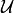 for a set of factors 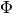 over 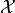 is an undirected graph, each of whose nodes
 is associated with a subset 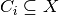. A cluster
graph must be family-preserving - each factor 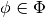 must be associated with a cluster C, denoted
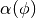, such that 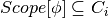. Each edge between a pair of clusters 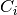
and 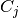 is associated with a sepset 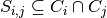.
is associated with a subset 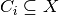. A cluster
graph must be family-preserving - each factor 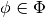 must be associated with a cluster C, denoted
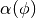, such that 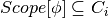. Each edge between a pair of clusters 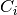
and 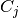 is associated with a sepset 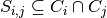.Parameters: data: input graph
Data to initialize graph. If data=None (default) an empty graph is created. The data is an edge list
Examples
Create an empty ClusterGraph with no nodes and no edges
>>> from pgmpy.models import ClusterGraph >>> G = ClusterGraph()
G can be grown by adding clique nodes.
Nodes:
Add a tuple (or list or set) of nodes as single clique node.
>>> G.add_node(('a', 'b', 'c')) >>> G.add_nodes_from([('a', 'b'), ('a', 'b', 'c')])
Edges:
G can also be grown by adding edges.
>>> G.add_edge(('a', 'b', 'c'), ('a', 'b'))
or a list of edges
>>> G.add_edges_from([(('a', 'b', 'c'), ('a', 'b')), ... (('a', 'b', 'c'), ('a', 'c'))])
-
add_edge(u, v, **kwargs)[source]¶ Add an edge between two clique nodes.
Parameters: u, v: nodes
Nodes can be any list or set or tuple of nodes forming a clique.
Examples
>>> from pgmpy.models import ClusterGraph >>> G = ClusterGraph() >>> G.add_nodes_from([('a', 'b', 'c'), ('a', 'b'), ('a', 'c')]) >>> G.add_edges_from([(('a', 'b', 'c'), ('a', 'b')), ... (('a', 'b', 'c'), ('a', 'c'))])
-
add_factors(*factors)[source]¶ Associate a factor to the graph. See factors class for the order of potential values
Parameters: *factor: pgmpy.factors.factors object
A factor object on any subset of the variables of the model which is to be associated with the model.
Returns: None
Examples
>>> from pgmpy.models import ClusterGraph >>> from pgmpy.factors.discrete import DiscreteFactor >>> student = ClusterGraph() >>> student.add_node(('Alice', 'Bob')) >>> factor = DiscreteFactor(['Alice', 'Bob'], cardinality=[3, 2], ... values=np.random.rand(6)) >>> student.add_factors(factor)
-
add_node(node, **kwargs)[source]¶ Add a single node to the cluster graph.
Parameters: node: node
A node should be a collection of nodes forming a clique. It can be a list, set or tuple of nodes
Examples
>>> from pgmpy.models import ClusterGraph >>> G = ClusterGraph() >>> G.add_node(('a', 'b', 'c'))
-
add_nodes_from(nodes, **kwargs)[source]¶ Add multiple nodes to the cluster graph.
Parameters: nodes: iterable container
A container of nodes (list, dict, set, etc.).
Examples
>>> from pgmpy.models import ClusterGraph >>> G = ClusterGraph() >>> G.add_nodes_from([('a', 'b'), ('a', 'b', 'c')])
-
check_model()[source]¶ Check the model for various errors. This method checks for the following errors.
- Checks if factors are defined for all the cliques or not.
- Check for running intersection property is not done explicitly over here as it done in the add_edges method.
- Checks if cardinality information for all the variables is availble or not. If not it raises an error.
- Check if cardinality of random variable remains same across all the factors.
Returns: check: boolean
True if all the checks are passed
-
copy()[source]¶ Returns a copy of ClusterGraph.
Returns: ClusterGraph: copy of ClusterGraph
Examples
>>> from pgmpy.factors.discrete import DiscreteFactor
>>> G = ClusterGraph()
>>> G.add_nodes_from([('a', 'b'), ('b', 'c')])
>>> G.add_edge(('a', 'b'), ('b', 'c'))
>>> phi1 = DiscreteFactor(['a', 'b'], [2, 2], np.random.rand(4))
>>> phi2 = DiscreteFactor(['b', 'c'], [2, 2], np.random.rand(4))
>>> G.add_factors(phi1, phi2)
>>> graph_copy = G.copy()
>>> graph_copy.factors
[<DiscreteFactor representing phi(a:2, b:2) at 0xb71b19cc>,
<DiscreteFactor representing phi(b:2, c:2) at 0xb4eaf3ac>]
>>> graph_copy.edges()
[((‘a’, ‘b’), (‘b’, ‘c’))]
>>> graph_copy.nodes()
[(‘a’, ‘b’), (‘b’, ‘c’)]
-
get_cardinality(node=None)[source]¶ Returns the cardinality of the node
Parameters: node: any hashable python object (optional)
The node whose cardinality we want. If node is not specified returns a dictionary with the given variable as keys and their respective cardinality as values.
Returns: int or dict : If node is specified returns the cardinality of the node.
If node is not specified returns a dictionary with the given variable as keys and their respective cardinality as values.
Examples
>>> from pgmpy.models import ClusterGraph >>> from pgmpy.factors.discrete import DiscreteFactor >>> student = ClusterGraph() >>> factor = DiscreteFactor(['Alice', 'Bob'], cardinality=[2, 2], ... values=np.random.rand(4)) >>> student.add_node(('Alice', 'Bob')) >>> student.add_factors(factor) >>> student.get_cardinality() defaultdict(<class 'int'>, {'Bob': 2, 'Alice': 2})
>>> student.get_cardinality(node='Alice') 2
-
get_factors(node=None)[source]¶ Return the factors that have been added till now to the graph.
If node is not None, it would return the factor corresponding to the given node.
Examples
>>> from pgmpy.models import ClusterGraph >>> from pgmpy.factors.discrete import DiscreteFactor >>> G = ClusterGraph() >>> G.add_nodes_from([('a', 'b', 'c'), ('a', 'b'), ('a', 'c')]) >>> G.add_edges_from([(('a', 'b', 'c'), ('a', 'b')), ... (('a', 'b', 'c'), ('a', 'c'))]) >>> phi1 = DiscreteFactor(['a', 'b', 'c'], [2, 2, 2], np.random.rand(8)) >>> phi2 = DiscreteFactor(['a', 'b'], [2, 2], np.random.rand(4)) >>> phi3 = DiscreteFactor(['a', 'c'], [2, 2], np.random.rand(4)) >>> G.add_factors(phi1, phi2, phi3) >>> G.get_factors() >>> G.get_factors(node=('a', 'b', 'c'))
-
get_partition_function()[source]¶ Returns the partition function for a given undirected graph.
A partition function is defined as
where m is the number of factors present in the graph and X are all the random variables present.
Examples
>>> from pgmpy.models import ClusterGraph >>> from pgmpy.factors.discrete import DiscreteFactor >>> G = ClusterGraph() >>> G.add_nodes_from([('a', 'b', 'c'), ('a', 'b'), ('a', 'c')]) >>> G.add_edges_from([(('a', 'b', 'c'), ('a', 'b')), ... (('a', 'b', 'c'), ('a', 'c'))]) >>> phi1 = DiscreteFactor(['a', 'b', 'c'], [2, 2, 2], np.random.rand(8)) >>> phi2 = DiscreteFactor(['a', 'b'], [2, 2], np.random.rand(4)) >>> phi3 = DiscreteFactor(['a', 'c'], [2, 2], np.random.rand(4)) >>> G.add_factors(phi1, phi2, phi3) >>> G.get_partition_function()
-
remove_factors(*factors)[source]¶ Removes the given factors from the added factors.
Examples
>>> from pgmpy.models import ClusterGraph >>> from pgmpy.factors.discrete import DiscreteFactor >>> student = ClusterGraph() >>> factor = DiscreteFactor(['Alice', 'Bob'], cardinality=[2, 2], ... value=np.random.rand(4)) >>> student.add_factors(factor) >>> student.remove_factors(factor)
-
Junction Tree¶
-
class
pgmpy.models.JunctionTree.JunctionTree(ebunch=None)[source]¶ Class for representing Junction Tree.
Junction tree is undirected graph where each node represents a clique (list, tuple or set of nodes) and edges represent sepset between two cliques. Each sepset in G separates the variables strictly on one side of edge to other.
Parameters: data: input graph
Data to initialize graph. If data=None (default) an empty graph is created. The data is an edge list.
Examples
Create an empty JunctionTree with no nodes and no edges
>>> from pgmpy.models import JunctionTree >>> G = JunctionTree()
G can be grown by adding clique nodes.
Nodes:
Add a tuple (or list or set) of nodes as single clique node.
>>> G.add_node(('a', 'b', 'c')) >>> G.add_nodes_from([('a', 'b'), ('a', 'b', 'c')])
Edges:
G can also be grown by adding edges.
>>> G.add_edge(('a', 'b', 'c'), ('a', 'b'))
or a list of edges
>>> G.add_edges_from([(('a', 'b', 'c'), ('a', 'b')), ... (('a', 'b', 'c'), ('a', 'c'))])
-
add_edge(u, v, **kwargs)[source]¶ Add an edge between two clique nodes.
Parameters: u, v: nodes
Nodes can be any list or set or tuple of nodes forming a clique.
Examples
>>> from pgmpy.models import JunctionTree >>> G = JunctionTree() >>> G.add_nodes_from([('a', 'b', 'c'), ('a', 'b'), ('a', 'c')]) >>> G.add_edges_from([(('a', 'b', 'c'), ('a', 'b')), ... (('a', 'b', 'c'), ('a', 'c'))])
-
check_model()[source]¶ Check the model for various errors. This method checks for the following errors. In the same time also updates the cardinalities of all the random variables.
- Checks if clique potentials are defined for all the cliques or not.
- Check for running intersection property is not done explicitly over here as it done in the add_edges method.
Returns: check: boolean
True if all the checks are passed
-
copy()[source]¶ Returns a copy of JunctionTree.
Returns: JunctionTree : copy of JunctionTree Examples
>>> import numpy as np >>> from pgmpy.factors.discrete import DiscreteFactor >>> from pgmpy.models import JunctionTree >>> G = JunctionTree() >>> G.add_edges_from([(('a', 'b', 'c'), ('a', 'b')), (('a', 'b', 'c'), ('a', 'c'))]) >>> phi1 = DiscreteFactor(['a', 'b'], [1, 2], np.random.rand(2)) >>> phi2 = DiscreteFactor(['a', 'c'], [1, 2], np.random.rand(2)) >>> G.add_factors(phi1,phi2) >>> modelCopy = G.copy() >>> modelCopy.edges() [(('a', 'b'), ('a', 'b', 'c')), (('a', 'c'), ('a', 'b', 'c'))] >>> G.factors [<DiscreteFactor representing phi(a:1, b:2) at 0xb720ee4c>, <DiscreteFactor representing phi(a:1, c:2) at 0xb4e1e06c>] >>> modelCopy.factors [<DiscreteFactor representing phi(a:1, b:2) at 0xb4bd11ec>, <DiscreteFactor representing phi(a:1, c:2) at 0xb4bd138c>]
-
Markov Chain¶
-
class
pgmpy.models.MarkovChain.MarkovChain(variables=None, card=None, start_state=None)[source]¶ Class to represent a Markov Chain with multiple kernels for factored state space, along with methods to simulate a run.
-
add_transition_model(variable, transition_model)[source]¶ Adds a transition model for a particular variable.
-
is_stationarity(tolerance=0.2, sample=None)[source]¶ Checks if the given markov chain is stationary and checks the steady state probablity values for the state are consistent.
-
prob_from_sample(state, sample=None, window_size=None)[source]¶ Given an instantiation (partial or complete) of the variables of the model, compute the probability of observing it over multiple windows in a given sample.
If ‘sample’ is not passed as an argument, generate the statistic by sampling from the Markov Chain, starting with a random initial state.
-
NoisyOr Model¶
-
class
pgmpy.models.NoisyOrModel.NoisyOrModel(variables, cardinality, inhibitor_probability)[source]¶ Base class for Noisy-Or models.
This is an implementation of generalized Noisy-Or models and is not limited to Boolean variables and also any arbitrary function can be used instead of the boolean OR function.
Reference: http://xenon.stanford.edu/~srinivas/research/6-UAI93-Srinivas-Generalization-of-Noisy-Or.pdf
-
add_variables(variables, cardinality, inhibitor_probability)[source]¶ Adds variables to the NoisyOrModel.
Parameters: variables: list, tuple, dict (array like)
array containing names of the variables that are to be added.
cardinality: list, tuple, dict (array like)
array containing integers representing the cardinality of the variables.
inhibitor_probability: list, tuple, dict (array_like)
array containing the inhibitor probabilities corresponding to each variable.
Examples
>>> from pgmpy.models import NoisyOrModel >>> model = NoisyOrModel(['x1', 'x2', 'x3'], [2, 3, 2], [[0.6, 0.4], ... [0.2, 0.4, 0.7], ... [0.1, 0. 4]]) >>> model.add_variables(['x4'], [3], [0.1, 0.4, 0.2])
-
del_variables(variables)[source]¶ Deletes variables from the NoisyOrModel.
Parameters: variables: list, tuple, dict (array like)
list of variables to be deleted.
Examples
>>> from pgmpy.models import NoisyOrModel >>> model = NoisyOrModel(['x1', 'x2', 'x3'], [2, 3, 2], [[0.6, 0.4], ... [0.2, 0.4, 0.7], ... [0.1, 0. 4]]) >>> model.del_variables(['x1'])
-
Naive Bayes¶
-
class
pgmpy.models.NaiveBayes.NaiveBayes(ebunch=None)[source]¶ Class to represent Naive Bayes. Subclass of Bayesian Model. Model holds directed edges from one parent node to multiple children nodes only.
Parameters: data : input graph
Data to initialize graph. If data=None (default) an empty graph is created. The data can be an edge list, or any NetworkX graph object.
Examples
Create an empty Naive Bayes Model with no nodes and no edges.
>>> from pgmpy.models import NaiveBayes >>> G = NaiveBayes()
G can be grown in several ways.
Nodes:
Add one node at a time:
>>> G.add_node('a')
Add the nodes from any container (a list, set or tuple or the nodes from another graph).
>>> G.add_nodes_from(['a', 'b', 'c'])
Edges:
G can also be grown by adding edges.
Add one edge,
>>> G.add_edge('a', 'b')
a list of edges,
>>> G.add_edges_from([('a', 'b'), ('a', 'c')])
If some edges connect nodes not yet in the model, the nodes are added automatically. There are no errors when adding nodes or edges that already exist.
Shortcuts:
Many common graph features allow python syntax for speed reporting.
>>> 'a' in G # check if node in graph True >>> len(G) # number of nodes in graph 3
-
active_trail_nodes(start, observed=None)[source]¶ Returns all the nodes reachable from start via an active trail.
Parameters: start: Graph node
observed : List of nodes (optional)
If given the active trail would be computed assuming these nodes to be observed.
Examples
>>> from pgmpy.models import NaiveBayes >>> model = NaiveBayes() >>> model.add_nodes_from(['a', 'b', 'c', 'd']) >>> model.add_edges_from([('a', 'b'), ('a', 'c'), ('a', 'd')]) >>> model.active_trail_nodes('a') {'a', 'b', 'c', 'd'} >>> model.active_trail_nodes('a', ['b', 'c']) {'a', 'd'} >>> model.active_trail_nodes('b', ['a']) {'b'}
-
add_edge(u, v, *kwargs)[source]¶ Add an edge between u and v.
The nodes u and v will be automatically added if they are not already in the graph
Parameters: u,v : nodes
Nodes can be any hashable python object.
Examples
>>> from pgmpy.models import NaiveBayes >>> G = NaiveBayes() >>> G.add_nodes_from(['a', 'b', 'c']) >>> G.add_edge('a', 'b') >>> G.add_edge('a', 'c') >>> G.edges() [('a', 'c'), ('a', 'b')]
-
fit(data, parent_node=None, estimator=None)[source]¶ Computes the CPD for each node from a given data in the form of a pandas dataframe. If a variable from the data is not present in the model, it adds that node into the model.
Parameters: data : pandas DataFrame object
A DataFrame object with column names same as the variable names of network
parent_node: any hashable python object (optional)
Parent node of the model, if not specified it looks for a previously specified parent node.
estimator: Estimator class
Any pgmpy estimator. If nothing is specified, the default
MaximumLikelihoodEstimatorwould be used.Examples
>>> import numpy as np >>> import pandas as pd >>> from pgmpy.models import NaiveBayes >>> model = NaiveBayes() >>> values = pd.DataFrame(np.random.randint(low=0, high=2, size=(1000, 5)), ... columns=['A', 'B', 'C', 'D', 'E']) >>> model.fit(values, 'A') >>> model.get_cpds() [<TabularCPD representing P(D:2 | A:2) at 0x4b72870>, <TabularCPD representing P(E:2 | A:2) at 0x4bb2150>, <TabularCPD representing P(A:2) at 0x4bb23d0>, <TabularCPD representing P(B:2 | A:2) at 0x4bb24b0>, <TabularCPD representing P(C:2 | A:2) at 0x4bb2750>] >>> model.edges() [('A', 'D'), ('A', 'E'), ('A', 'B'), ('A', 'C')]
-
local_independencies(variables)[source]¶ Returns an instance of Independencies containing the local independencies of each of the variables.
Parameters: variables: str or array like
variables whose local independencies are to found.
Examples
>>> from pgmpy.models import NaiveBayes >>> model = NaiveBayes() >>> model.add_edges_from([('a', 'b'), ('a', 'c'), ('a', 'd')]) >>> ind = model.local_independencies('b') >>> ind (b _|_ d, c | a)
-